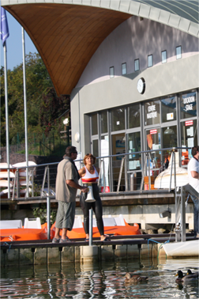

|  |  |
| La base nautique du lac d’Aydat vous accueille pour cette nouvelle édition 2014 de la Ronde des Cheires. Il s'agit d'une épreuve de nage avec palmes en relais ou individuelle d’une durée de trois heures. Chaque équipe est constituée deux ou trois nageurs et peut être mixte et interclub. |
 |